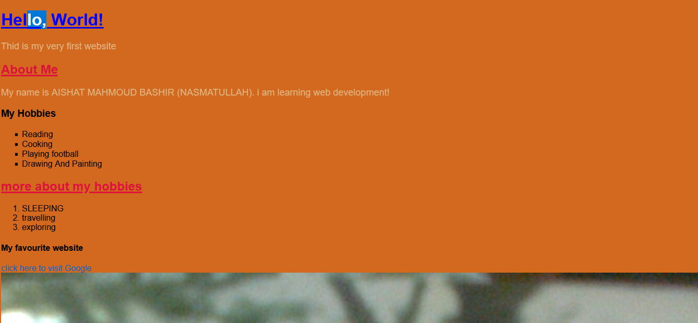

My Portfolio
My Journey as a webdeveloper.
well actually my jourey as a webdeveloper did not start with DevGenZ, i started codding since 2019
where i registered a course with
CODINGAL🐧. i did the
course for almost a year not not paying well attention to
it my tutors name is EKTA JHA she is from India,
very social
and friendly person sometimes we will just be gisting during the class.
When i saw this oppurtunity of Joinging DevGenZ i told my self why
not finish that untold story of
you becoming a webdeveloper
this another chance giving to you use that oppurtunity gurl😊.
My first website at DevGenZ
A clean and reponsive page designed for a startup.
My week 3 project at DevGenZ
Becoming a webdeveloper bit by bit one of my work that am proud of😇.

My last work before my final project
this is a screen shot of week 4 that we did i can say is the hardest and took time because i was having exams
and at the sametime thinking of what to produce as my project and how to start the project.
i end up liking it the
colors are giving a gurly and unique vibes